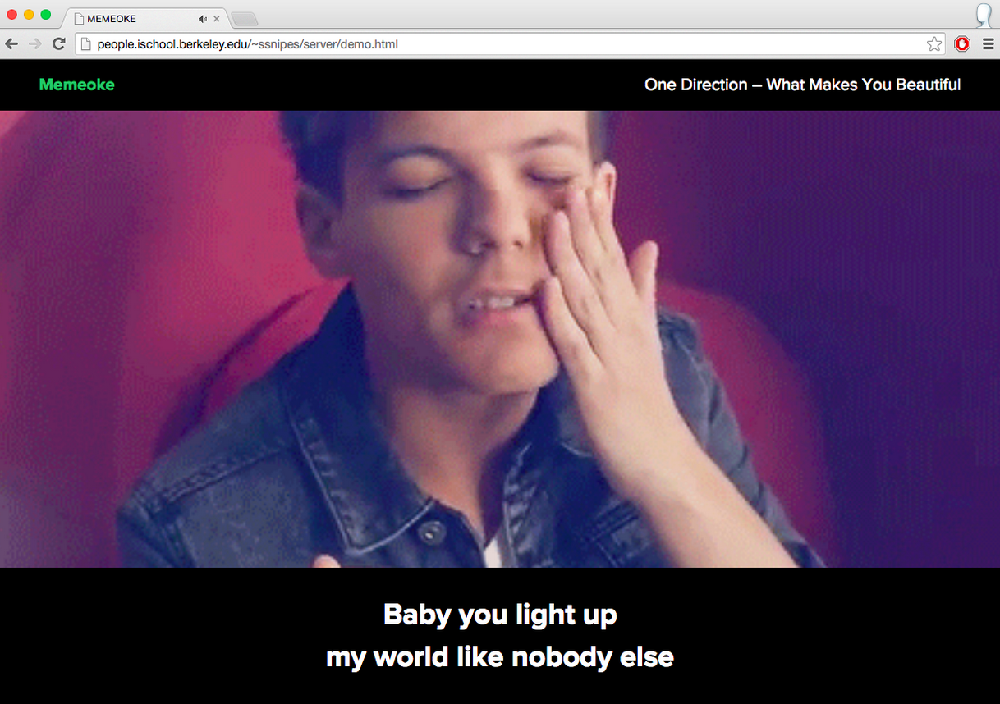
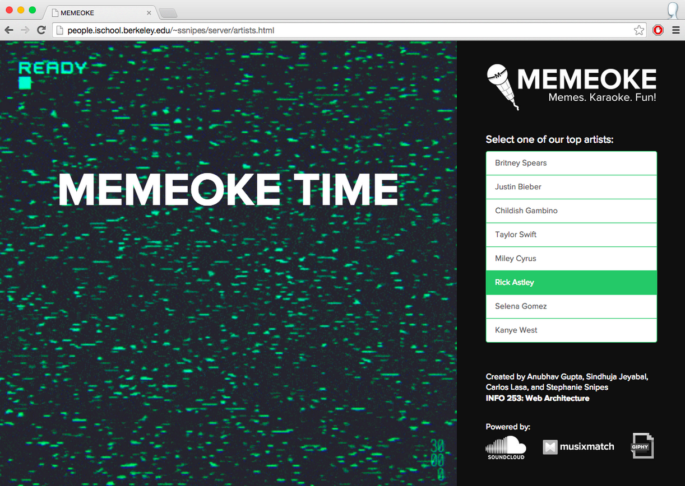
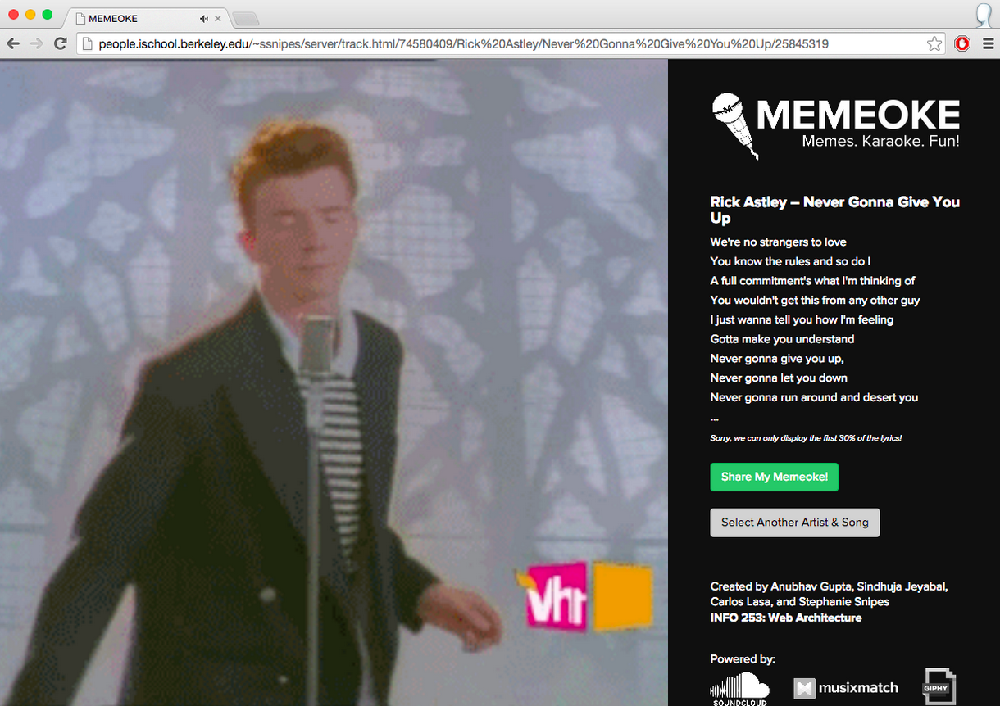

AI-Powered Image Generation: Transforming Abstract Ideas into Realistic Visions
OBJECTIVE
The aim of this project is to revolutionize the architectural design process by transforming abstract sketches into realistic, detailed images using advanced deep learning techniques. This allows architects and designers to visualize their concepts more vividly and iterate designs quickly.
DATA
Dataset: CMP Facade Database with paired images of building facades and architectural label maps.
Allocation: 400 images for training, 106 for testing, and 100 for validation.
Preprocessing: Applied techniques such as random jittering, mirroring, and normalizing to enhance model training and generalization.
Model Architecture
Generative Adversarial Networks (GANs): Utilized a Pix2Pix model for its effectiveness in image-to-image translation tasks.
- Generator: U-Net-based architecture.
- Discriminator: Convolutional PatchGAN classifier.
Convolutional Neural Networks (CNNs): For feature extraction and resolution enhancement.
Implementation Tools: TensorFlow and Keras libraries with Python.
To implement the meme-karaoke mash-up, the following shows the breakdown of features that were initially proposed and what were eventually implemented in the application:
-
We offer the user a curated list of popular artists to choose from, after which we generate a list of recent songs for each artist (for which both audio and lyrics exist) that the user can select to sing.
-
Once a song is selected, lyrics are sourced from the Musixmatch API which returns them in JSON format. Not all lyrics are returned, and there are also no timings for the lyrics due to limitations imposed by the free Musixmatch service. A “demo” feature was created to illustrate how the service would have looked like with timed lyrics.
-
Memes shown are based on the name of the artist chosen (as the Musixmatch API only returns a fraction of the lyrics) and are sourced from the Giphy API. Only the first 20 memes are taken by the application.
-
Memes are displayed 5 seconds at a time. Sound pitch variance was not implemented.
-
The recording feature was not implemented due to limitations of the APIs used. The URL-shortening service can still be used to share the meme-karaoke mash-up though.
Technical Details
- Front-End: HTML, CSS, JavaScript, and the Bootstrap responsive framework
- Back-End: Python Flask, SQLite
- APIs: Musixmatch API, Giphy API, SoundCloud API
View Presentation

Synced Lyrics Demo Using LRC Files

"Select an Artist" Interface

"Song Playing" Interface